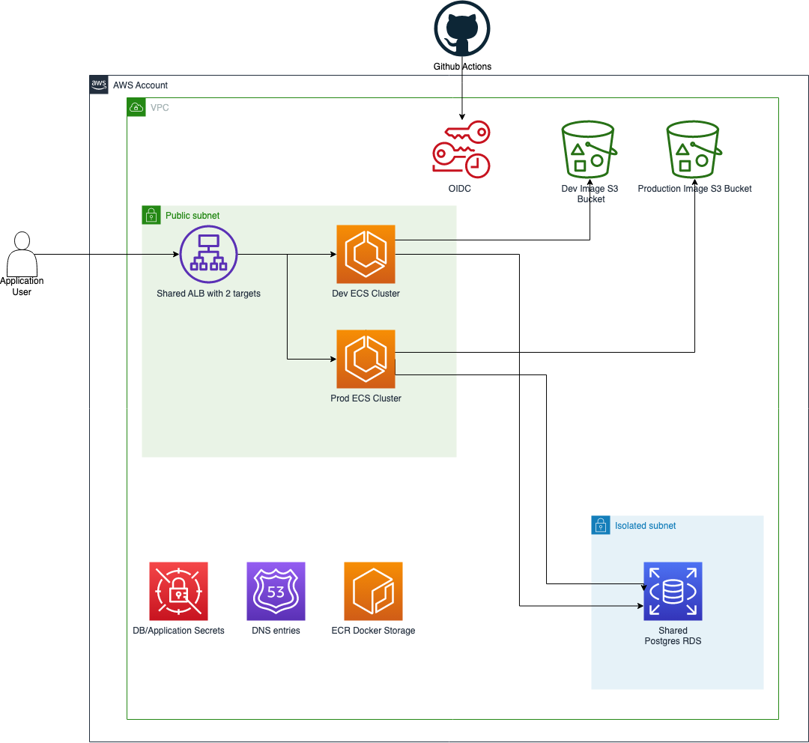

Deployment
The project is being deployed to AWS. We are using a single account that is shared between our development and production environments. Putting both environments is for cost saving measures as the free tier allows for one free ALB and one free RDS instance. So to reap those benefits for awhile we will run in the same account.
Pretty Pictures

Words for the pictures
Github actions is setup to utilize OIDC to gain access to the configured roles for each deployment environment as well as the build step to push the docker containers. To do a deployment to an environment, simply create a new release and corresponding tag using the vx.x.x convention for naming.
Once build to kick off any cdk diff or cdk deployment you must approve the run to execute. Approvers are added to the github environments.
Development and Production even though seperate are living in the same VPC again to save cost on resources like ALB and RDS. Once we grow those can easily be split out and should live in their own accounts.
We also took the stance of no NAT Gateways as a cost saving measure as well. Simply placing the ECS clusters in side the public subnet with a very restricted security group allow for that to happen. No direct access from the internet is possible only the ALB can access the ECS clusters even though public. Usually you would place these in a private subnet with NAT Gateway or an isolated subnet with VPC endpoints to all the things you need access to. The later was an option but decided not to over complicate it.
RDS is able to live inside an isolated subnet and does just that.
S3 is used for image storage and there is a bucket per environment.
ECR is utilized for the docker container storage that is used for the containers deployed to ECS. A strict retention policy has been configured to only allow a few containers per service to exist to save cost.
Secrets Manager well holds all our secrets. Things like master RDS credentials, RDS app user credentials, google maps api key, etc.
Building Docker containers
Building of docker containers happens via Github Actions. We have a container for the frontend React application and another for the nodejs backend application.
DB updates
Today DB migrations and even the initialization is manual and requires extra setup that can be found here